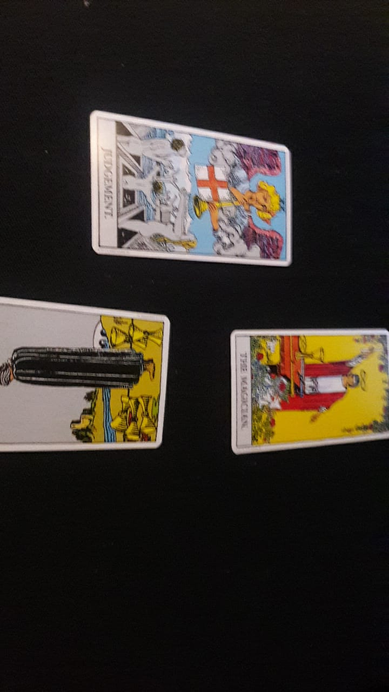

Readings By Meg

Readings
Types of Readings
Celtic Cross Spread
Information about celtic
Three Card Spread

Three card spreads generally are done in a few ways.
- Three options of action.
- Past, Present, and Future of a situation.
- Situation, Action, and Outcome of the aciton.
- Dellima, Choice A, Choice B.
- Problem, Advice, Outcome.
- Person, Character, Influence
One Card Spread
Information about three card
Twelve House Astrological Spread
Information about Twelve House Astrological Spread
Monthly Spread
Information about Monthly
Horoscope Spread
Information about Horoscope Spread
Horseshoe Spread
Information about Horseshoe Spread